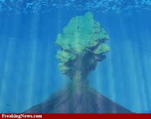

VULKANIZEM V ITALIJI
IZBRUH VULKANA

Izbruhi vulkana so sicer zelo redki, vendar ko izbruhnejo, se zgodijo slednje stvari: Iz vulkana izbruhne LAVA, poleg nje nastanejo trdni delci, pepel in razni plini. Izbruh ognjenikov povzročijo veliki pritiski v vulkanskih kotlih pod površino. Ti izbruhi so glede na sestavo in razporeditev magme eksplozivne ali neeksplozivne narave.
Eksplozija ponese nad zemeljsko površje magmo v obliki raztrganih delcev, ki tvorijo piroklastične materiale. Nastane ob izbruhu magme, sestavljene iz bolj debelih zrn, kakršna so andezitna in dacitna zrna v nasprotju z bazaltnimi. Traja lahko nekaj ur ali več dni, manjši delci pa potujejo zelo daleč po atmosferi. Posebno močne eksplozije se imenujejo Plinijeve eksplozije po rimskem naravoslovcu Pliniju Mlajšem. Zelo divji izbruh je uprizorila Sveta Helena maja 1980, ko se je njen vrh zaradi eksplozije znižal za 400 metrov, prišlo pa je tudi do uničenja 57 človeških življenj ter velike gmotne in naravne škode, zaradi česar ta izbruh velja za najbolj uničujočega v dokumentirani zgodovini Združenih držav.
Vulkanski izbruhi neeksplozivne vrste izvržejo tekočo lavo, ki oblikuje navadno po pobočju tekoč ognjeniški tok. To je lava z manjšo židkostjo, mnogokrat bazaltna. V tem primeru se v zraku znajde malo piroklastičnega materiala. Izbruhi tega tipa so značilni med drugim za havajsko otočje in Ameriško obalo.